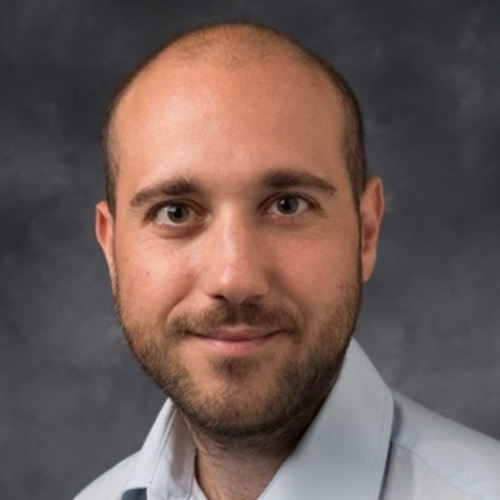
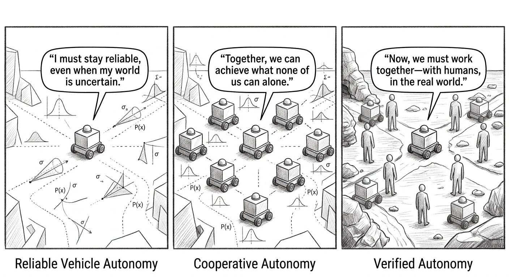

Venanzio Cichella
Associate Professor of Mechanical Engineering, University of Iowa

I work on planning and control for teams of autonomous vehicles. My research, under the theme of resilient autonomy, spans cooperative control, collision avoidance, optimal control, machine learning, and human-centered design of autonomous vehicles.
I direct the Cooperative Autonomous Systems Lab, where my students and I take these methods from theory to experiments on real robots.
scholarresearchgategithubemail
Research
Resilient autonomy in contested and congested environments, in three connected thrusts:
- Reliable vehicle autonomy. Adaptive and robust control of vehicles with uncertain dynamics.
- Cooperative autonomy. Optimal multi-vehicle motion planning with Bernstein approximants.
- Verified autonomy. Learning-enabled planning, human–autonomy studies, and experiments on physical vehicles.

News
- Oct 2026
- New three-year NSF award on safe AI for autonomous underwater vehicle decision making and motion planning. Iowa Now
- Sep 2026
- Invited talk on resilient field autonomy, Colorado State University.
- 2026
- Best Paper Award in Soft Smart Materials, Smart Materials and Structures, with A. Fahim Golestaneh and C. Lamuta.
- 2026
- Bernstein/Bézier Polynomials in Control, Estimation, and Planning, with Kaminer, Pascoal, and Hovakimyan, forthcoming from Springer Nature (2027).
Appointments & education
- 2024–
- Associate Professor, Mechanical Engineering, University of Iowa
- 2025
- Visiting Professor, University of Bologna
- 2020–
- Faculty Research Engineer, IIHR–Hydroscience & Engineering
- 2018–24
- Assistant Professor, University of Iowa
- 2018
- PhD, Mechanical Engineering, University of Illinois Urbana-Champaign“Planning and Control of Cooperative Autonomous Systems,” advised by Naira Hovakimyan
- 2011
- MS, Automation Engineering, University of Bologna
Honors
- 2026
- Best Paper Award, Smart Materials and Structures
- 2024
- MechSE Outstanding Young Alumni Award, UIUC
- 2022
- Amazon Research Award
- 2022
- Best Paper Award, ASEE Annual Conference